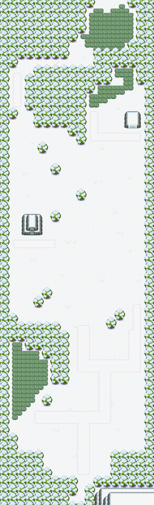

蓝色碎片
小块蓝色碎片。
获取：50号水路(36,48) ／ 50号水路(31,68) ／ 50号水路(44,34) ／ 纯白冻土(4,80) ／ 漩涡岛(11,6) ／ 破海洞穴(9,12) ／ 寂静之丘(10,27) ／ 断崖通道(23,10)
用途
小块蓝色碎片。 来自于某种很久以前造出的工具。
标价 1000 口袋：道具
获取方式
地面隐藏
- 50号水路（区域130） · (36,48) · 数量 1 · 地图｜静态图
- 50号水路（区域130） · (31,68) · 数量 1 · 地图｜静态图
- 50号水路（区域130） · (44,34) · 数量 1 · 地图｜静态图
- 纯白冻土（区域215） · (4,80) · 数量 1 · 地图｜静态图
- 漩涡岛（区域176） · (11,6) · 数量 1 · 地图｜静态图
人物剧情
- 破海洞穴（区域207） · (9,12) · 与坐标处人物交互 · 数量 1 · 地图｜静态图 · 触发条件待补
- 寂静之丘（区域212） · (10,27) · 与坐标处人物交互 · 数量 1 · 地图｜静态图 · 触发条件待补
- 断崖通道（区域198） · (23,10) · 与坐标处人物交互 · 数量 1 · 地图｜静态图 · 触发条件待补
数据来源
- 来源文档：out/items.json（
/49） - 表索引 index 0049；内嵌 itemId 49；口袋 ITEMS (id=1)；type 4；hold_effect 0/0；importance 0；unk19 0
- 获取来源文档：maps_research/out/events/events.json、maps_research/out/scripts/scripts.json
- 获取记录 ID：
hidden:3:102:1、hidden:3:103:3、hidden:3:105:10、hidden:52:24:3、hidden:55:16:0、script_item_candidate:std:087B1620:1:108、script_item_candidate:std:08EC4DF7:1:103、script_item_candidate:std:08EC7B4C:1:99 - 说明文字解码来源：
reference/SAVE_HOME_GAME_DATA.json.charmap
地点地图
共享RGB底图；点击可缩放定位。数字对应本页相关地点，不代表地图上全部事件。
50号水路

1 蓝色碎片（36,48）
50号水路

1 蓝色碎片（31,68）
50号水路

1 蓝色碎片（44,34）
纯白冻土

1 蓝色碎片（4,80）
漩涡岛

1 蓝色碎片（11,6）
破海洞穴

1 蓝色碎片（9,12）